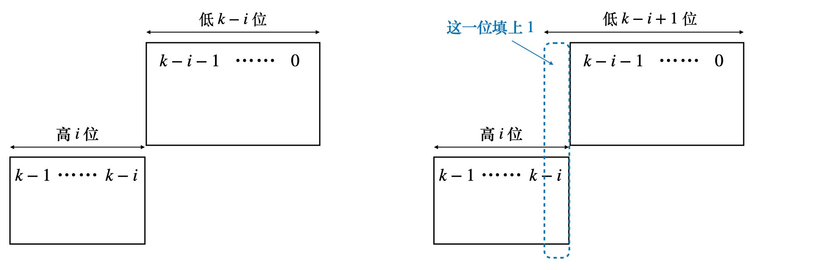

E.Arena (Educational Codeforces Round 116)
E.Arena
题目大意，一共有 n 个人战斗，每个人初始时有 ai 的 HP，但是 ai 未知，只知道 1⩽ai⩽x
如果一个人的 HP <1，那么这个人死亡，每一轮攻击，一个活着的人会向其他所有人发动一次攻击，消减 1 HP
最后活着的人取得胜利，现在问，如果最后没有人活下来，此时 ai 有多少种选法？
分析
注意问题中的条件，一轮攻击下来，只要是活着的人，会向其他所有人发动削减 1 HP 的攻击
如果一个人在一轮攻击中死去，假设这一轮有 i 个人活着，那么这一个人所承受的攻击 Δ∈[1,i−1]
换句话说，血量 ⩽i−1 的，都会死亡
根据这个就可以设计状态了，假设攻击前有 i 个人存活，每个人最多能承受的攻击数量为 j，这时候的方案数为 dp(i,j)
那么一轮攻击下来，只剩下 k 个人存活，这 k 个人最多必须能承受 nj=min(x,j+(i−1)) （题目要求上界为 x）
那么接下来考虑 dp(i,j)→dp(k,nj) 的转移，大致为 dp(k,nj)+=dp(i,j)⋅Q，Q 为这一轮死掉的 i−k 个人的情况
考虑 Q，这一轮死掉的 i−k 个人，每个人的血量取值范围为 [1,nj−j]，注意不能写成 [1,i−1]，因为有上界 x 的限制
Q=(i−ki)⋅(nj−j)i−k
枚举 i,k，枚举 j∈[0,x]
dp(k,nj)+=dp(i,j)⋅(i−ki)⋅(nj−j)i−k,(k<i, nj=min(x,j+(i−1)))
递推的时候，合法方案才发生转移，dp(i,j)=0 为非法方案
初始状态为 dp(n,0)=1，最后的答案为 ans=j=0∑xdp(0,j)
注意转移的时候 dp(i,j)，i=[n→2]，因为仅有 1 个人存活是非法状态
Educational Codeforces Round 116 其他题目
C. Banknotes
题目大意转换为 10a1⋅x1+10a2⋅x2+⋯10an⋅xn=S
其中给定 x1+x2+⋯xn=k+1，求 S 的最小值
首先来看一个贪心策略，x1 最多能拿多少呢？因为 10a2=10a1⋅10a2−a1
也就是说，现在 S=10a2，如果我用 10a2−a1 张票去表示 S 是不划算的
我用 1 张 10a2 就可以表示 S 了，用 10a2−a1 这么多就是浪费
根据贪心策略，x1,x2,⋯ 要尽可能多，然后后面几项 ⋯xn 都填 0 即可
x1 最多可以为 (10a2/10a1)−1，以此类推，令 xi=10ai10ai+1−1
这样就可以设计出如下算法，令 res=k+1, S=0
对于每一个 i，如果 res⩾xi，则 S+=10ai⋅xi, res−=xi
否则 S+=res⋅10ai, res=0，当 res⩽0 的时候退出循环
Codeforces Round 752 (Div. 1)
F. October 18, 2017
题目大意，给你三个数 n,k,x，求满足以下条件的序列个数
假设序列为 {a1,a2,⋯an}，其中序列的长度必须为 n，此外
- 对于每个 i，有 0⩽ai<2k
- 这个序列的任意非空子序列（不一定连续），子序列元素的异或和都不等于 x
说明，这里的 ai 可以相同
简单情况，此时 x=0
若 n>k，这样的序列一定不存在，返回 0 即可，因为要想任意子序列的异或和都不为 0，只能如下构造
A=⎝⎜⎜⎜⎜⎛00100⋱0⋯⋯⋮⋯010100⎠⎟⎟⎟⎟⎞
（即对角线为 1 的单位矩阵），只能有 k 个元素，如果再多放进去一个元素 u
不管这个元素哪一位为 1，或者多个位为 1，总可以从 A 中找到相应的 ai，使得相应的位异或为 0
下面只需考虑 n⩽k，x=0 的情况
那么构造的方式类似线性基，对于 k 位的向量空间，dim=k，一共有 2k−1 个非 0 向量
假设已经构造出的元素是 {a1,a2,⋯,ai−1}，考虑构造 ai
类似线性基，需要保证低位 [0⋯i−1]位可以自由选择，高位 [i⋯k] 必须出现一个 1
此时低位已经在 {a1,a2,⋯ai−1} 构造的过程中，计算了方案数，答案为
A(i−1)=⎝⎜⎜⎜⎜⎛00100⋱1⋯⋯⋮⋯011101⎠⎟⎟⎟⎟⎞，其中 A(i−1) 表示向量有 i−1 位
那么此时 ai 的选择，只能是从 (>(11⋯1)i−1) 开始选，也就是剩下的
cnt(i)=A(k)−A(i−1)=(2k−1−(2i−1−1))=2k−2i−1 个选择
综上所述，{a1,a2,⋯,an} 一共有 i=1∏ncnt(i) 种
答案为 (2k−1)⋅(2k−21)⋅(2k−22)⋯⋅(2k−2n−1)
考虑 x⩾1 的情况
首先注意到本例是统计方案，如果已经统计出任意子序列异或和在第 i 位不为 1 的方案数
那实际上方案数和这个 1 出现在第几位是没有关系的，由此可以推出一个结论，对于 x=0 而言
所有 x>1 的方案数等价于 x=1 的方案数，这可以通过映射来证明
首先对于所有 x>1 的方案，我们可以取 highbit(x)，将 1 从最高位换到最低位
子序列的异或和不为 x，那么在 highbit(x) 位异或和也一定不为 1，这样的方案数可以映射到 x=1 的方案数
其次对于所有 x=1 的方案，我们可以将这个 1 调整到 [1⋯k] 的任意一位
这样每一个 x=1 的方案可以构造出任意 1<x<2k 的方案，下面只需考虑 x=1 的情况
不妨用 P(i) 表示 hightbit(x)=i （即最高为 1 的位是第 i 位），[i−1⋯0] 位为自由变量
（自由变量就是可以为 0 也可以为 1），此时满足条件的方案数（条件指的是：任意子序列的异或和都不为 1）
其中， i∈[k−1→0]
最后的答案为 i=k−1→0∑P(i)，下面考虑如何计算 P(i)
从线性基的角度来考虑问题，P(i) 对应的方案中，第 i 位为 1，此时 {a1,a2,⋯an} 构成的解空间方案数记为 S(i)
第 i 位为 1，对应的解空间 S(i) 的维度 dim(S)=i
下面考虑维度为 t 的解空间，记为 S(t)=⎝⎜⎜⎜⎜⎛x(t): 00 100⋱1⋯⋯⋮⋯011101⎠⎟⎟⎟⎟⎞
其中 x(t) 表示向量的维度为 t，下面考虑 S(t) 可以由 1 张成和不能由 1 张成的方案数
如果 S(t) 可以由 1 张成，换句话说 S(t) 中含有向量 1，也就是说 S 必须为
⎝⎜⎜⎜⎜⎜⎜⎛0 ⋯ ⋱ 0⋯⋯⋮⋯10 00⎠⎟⎟⎟⎟⎟⎟⎞ 这样的形式，才能保证选取任意子项进行高斯消元，1 这一项不会被消去
也就是说，span(1) 的方案数为和 1 线性无关，或者说正交的向量个数，这样的向量有多少个呢？
实际上我们除了 1=(0 0⋯ 0 1) 这个向量外，要在 S(t) 中选出低位为 0 的非 0 向量，与 1 构成线性组合
S(t) 数的取值范围为 [1⋯2t−1]，也就是对应 2t−1 个非 0 向量
其中最低位为 0 的数一共有 2t−1−1 个，最低位为 1 的数有 2t−1 个，由此可以推出以下结论
结论 1，对于 S(t)，包含 1 的子空间有 span(1)=2t−1−1 个，不包含 1 的有 span(=1)=2t−1 个
对于维度为 i 的空间 S(i) 计算 P(i)
基本的思想是，先计算 k 维解空间中能划分出多少个 i 维子空间？然后再在这个子空间中任意选择 n 个作为 {a1,⋯,an}
P(i) 不太好直接计算，因为解空间的维度 k⩾i，[i−1→0] 这几位为自由变量，并且不能包含 1
这部分很好计算，就是 2i−1 种
那么 [k−1→i] 这几位呢？我们要的 P(i) 是 highbit(x)=i，只是其中的 1 位
更高位 [i+1→k] 的情况该怎么考虑？
我们想到利用容斥间接计算 P(i)，定义 Q(i) 如下
Q(i): 高 i 位子空间，即 [k−1→k−i] 包含 1，同时低 k−i 位子空间
即 [k−i−1→0] 为自由变量，这样的子空间划分的方案数记为 Q(i)（自由变量就是可为 0 可为 1）
这样对于 i∈[0→k−1]，根据容斥原理，P(i)=Q(i)−Q(i+1)+Q(i+2)−⋯+(−1)k−1−iQ(k−1)

这样高 i 位的方案数 high(i) 为 dim(k−i+1)⋅dim(k−i+2)⋯⋅dim(k)，其中 dim(i) 表示维度为 i 的子空间
包含向量 1 的方案数
high(i)=(2(k−1)−(i−1)−1)⋅(2(k−1)−(i−2)−1)⋯(2k−1−1)=j=0∏i−1(2k−1−j−1)
低 k−i 位的方案数为 2k−i−1，别忘了低 k−i 位对应 k−i 维空间放置自由变量
对于 {a1,a2,⋯,an}，每一项都有 2k−i 种选择，所以还要乘上 (2k−i)n
构造子空间的过程具体如下，k−i 维子空间有 2k−i 个向量，其中 2k−i−1 个末尾为 0，2k−i−1 个末尾为 1
末尾为 0 的向量可以任意选择，来张成低位的 k−i 维子空间，有 2k−i−1 种选择
这些向量填充了子空间的一半，并且它们的高位 [k−i,k−i+1,⋯,k−1] 是 0
剩下的一半怎么构造？
如图所示，在原来低 k−i 维的基础上，往外扩 1 位，让这一高位填上 1，构成 k−i→k−i+1 维的递推
这样第 k−i+1 维空间中含有 1 的方案数恰为 2k−i−1，以此类推
最后这部分的方案数为 (2k−i−1)⋅(2k−i+1−1)⋯(2k−1−1)
同时构造出 {a} 每一项可能的取值有 2k−i 种
于是有如下结论
结论 2，在 k 维空间中，划分出低位对应的 k−i 维子空间，放自由变量，同时剩下的高位 i 维空间放置向量 1 张成的子空间
这样的方案数 Q(i)=(j=0∏i−12k−1−j−1)⋅(2k−1−i)⋅(2k−i)n
k 阶容斥计算答案
容斥原理 集合 S 中至少具有性质 P1,P2,⋯Pm 之一的对象个数由如下给出
∣A1∪A2∪⋯∪Am∣=∑∣Ai∣−∑∣Ai∩Aj∣+∑∣Ai∩Aj∩Ak∣−⋯+(−1)m+1∣A1∩A2∩⋯∩Am∣
其中 Ai 为具有性质 Pi，也可能有其他性质的对象构成的子集
回到本问题，定义 P(i) 为如下性质
在 k 维空间内，k−i 维作为低位放置自由变量，这些划分空间构成的集合记为 P(i)
可以推出 i=0∑k−1∣Ai∣=Q(0)，i,j∈[0,k−1]∑∣Ai∩Aj∣=Q(1)，以此类推
∣A0∩A1∩⋯∩Ak−1∣=Q(k−1)
具体来说，Q(0)∩Q(1)=Q(1)，因为 k 维的方案中肯定统计了 k−1 维的方案
而 k−1 维的方案又包含了 k−i 维的方案，1<i⩽k−1，所以 i,j∑∣Ai∩Aj∣=Q(1)
k 阶容斥之后的结果为
tot=Q(0)−Q(1)+Q(2)−⋯+(−1)k−1Q(k−1)
代入之后结果为
(2k−1⋅(2k)n)−( (2k−1−1)⋅2k−2⋅(2k−1)n )+( (2k−1−1)(2k−2−1)⋅2k−3⋅(2k−2)n )+⋯+(−1)k−1⋅(2k−1−1)(2k−2−1)⋯(21−1)⋅20⋅(21)n
可以简写为
i=0∑k−1(−1)i⋅(2k−i)n⋅(j=0∏i−1(2k−1−j−1))⋅2k−1−i
 微信
微信 支付宝
支付宝